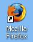
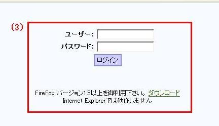
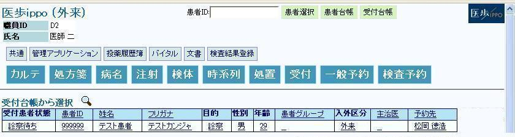
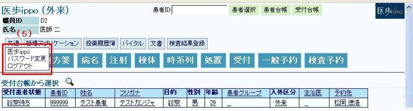
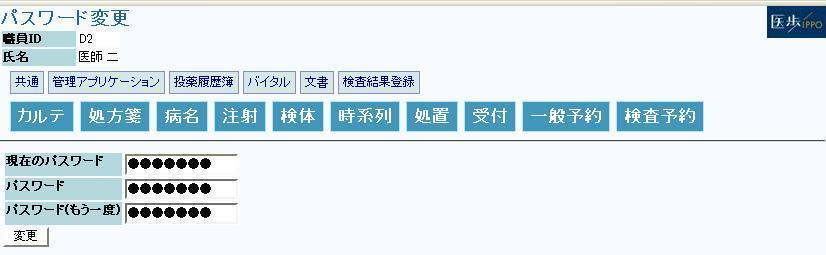

１ 医歩電子カルテの起動
医歩電子カルテはMozilla Firefox（GECKOエンジン搭載ウェブブラウザ）で動作します
（１） Firefoxブラウザを起動してください。

（２） ホームページに登録してあるログイン画面が表示されます
（ホームページ登録が無い場合、案内にあるアドレスを指定してください）
（３） ユーザーID及び、パスワードを入力し「ログイン」ボタンをクリックします
（ユーザーIDとパスワードは案内に記載されております）

（４） システムメニューと受付済み患者リストが表示されます

システムメニューの上段は文書やシステムの管理に使用します
下段がは診療行為に使用するものです。
（５） 「共通」ボタンから以下の操作が出来ます
※その他の項目は各項目の説明を参照して下さい

① ippo： ログイン後の画面に戻ります。
患者台帳は、登録されている全患者からの検索を可能にします。
検索ボタン（虫めがね）を押すと検索条件入力画面になります。
受付台帳は、当日の受付すみ患者全員のリストです。
② パスワード変更 ： 管理者から与えられたパスワードを変更できます

※パスワードは6桁以上にして下さい
③ ログアウト ： 医歩電子カルテからログアウトします（ログイン画面に戻ります）